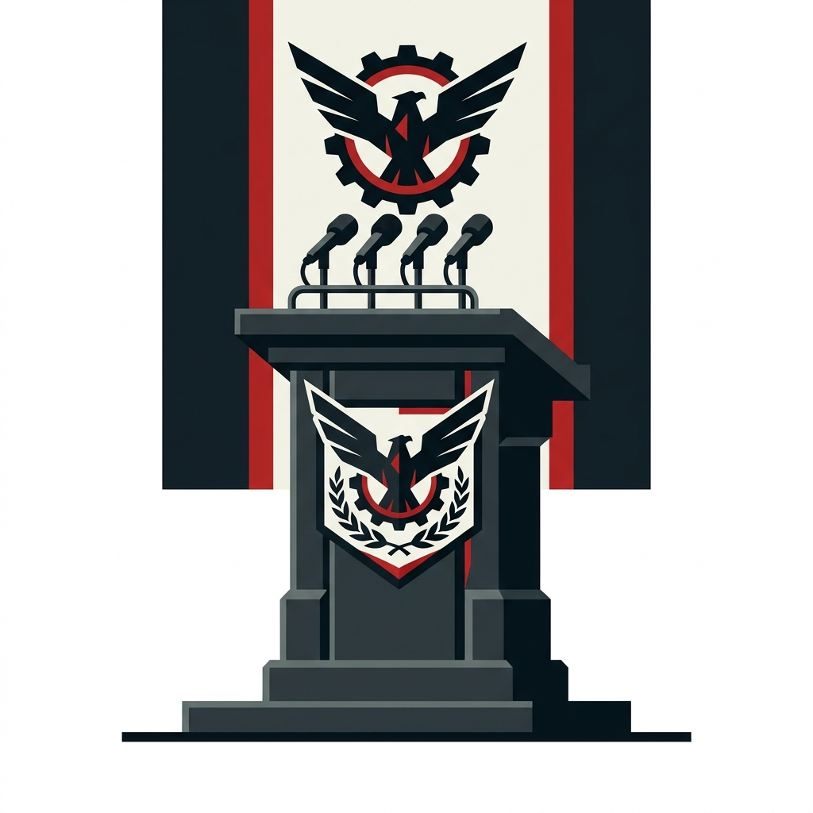

Vardaan Learning Institute
ICSE Class 10 History • Chapter Notes
🌐 vardaanlearning.com📞 9508841336Team Vardaan ❤️
Chapter 3: Rise of Totalitarianism in Europe

After WWI, economic hardships, political instability, and national humiliation created conditions for the rise of totalitarian regimes in Europe. The most significant were Fascism in Italy under Mussolini and Nazism in Germany under Hitler.
Concept
Totalitarianism: A system of government where a single dictatorial leader or party exercises total control over all aspects of the state — political, economic, social, military, and cultural life. No opposition is permitted. Citizens are expected to show complete loyalty to the state and its leader. Both Fascism and Nazism are forms of totalitarianism.
1. Rise of Fascism in Italy
Causes of the Rise of Fascism in Italy
- Post-WWI humiliation — "Mutilated Victory": Italy had joined the Allied Powers in WWI (1915) in exchange for territorial promises. At the Paris Peace Conference (1919), Italy was denied the promised territories (Dalmatia, Fiume, African colonies). Italians felt cheated and humiliated — they called it a "mutilated victory" (vittoria mutilata).
- Severe economic crisis: Unemployment, inflation, food shortages, and poverty devastated Italy after the war. Returning soldiers found no jobs. Industrial and agricultural workers were on strike.
- Political instability: Italy's parliamentary system was weak — constant coalition governments collapsed frequently. No government could effectively handle the crises.
- Fear of communist revolution: The Russian Revolution (1917) had created a communist state. Italian landowners, industrialists, and the middle class feared a similar revolution in Italy. They actively supported Mussolini as a bulwark against communism.
- Rise of Mussolini: Mussolini was a charismatic, brilliant speaker who offered simple, powerful solutions — national glory, strong leadership, and the crushing of communism.
Fact
Benito Mussolini (1883–1945) — Born in Predappio, was originally a socialist journalist. After WWI, he founded the National Fascist Party (Fasci di Combattimento) in 1919. The word "Fascism" comes from the Italian word fascio meaning a bundle of rods — symbolizing strength through unity. Mussolini became known as Il Duce (The Leader). His paramilitary group called the Black Shirts (Squadrismo) used violence and intimidation against political opponents — communists, socialists, and trade unionists.
March on Rome (October 1922) — Mussolini Comes to Power
- In October 1922, Mussolini organized his Black Shirts to march on Rome, threatening to seize the government by force.
- The weak Prime Minister Luigi Facta urged King Victor Emmanuel III to declare martial law, but the King refused — fearing civil war and believing Mussolini could stabilize Italy.
- King Victor Emmanuel III invited Mussolini to form the government on 28 October 1922.
- Mussolini became Prime Minister at age 39 — the youngest in Italian history.
- By 1926, Mussolini had suppressed all political parties, banned trade unions, controlled the press, and established a complete one-party dictatorship.
Features of Italian Fascism
- Totalitarian state: Single party (National Fascist Party) ruled. All opposition parties were banned. Parliament became a rubber stamp.
- Cult of Il Duce: Mussolini was presented as the infallible, all-knowing leader. His image was everywhere; his speeches were broadcast nationwide.
- Aggressive nationalism and imperialism: Mussolini dreamed of recreating the Roman Empire — "Mare Nostrum" (Our Sea) for the Mediterranean.
- Corporatism: The state controlled both employers and workers through government-supervised corporations — neither capitalism nor communism.
- Anti-communism and anti-democracy.
- Glorification of war and violence: "War is to a man what maternity is to a woman."
- Expansionism: Italy invaded and conquered Abyssinia (Ethiopia) in 1935–36 using poison gas, defying the League of Nations.
- Rome-Berlin Axis (1936): Mussolini and Hitler formed an alliance — the "Axis Powers."
2. Rise of Nazism in Germany
Causes of the Rise of Nazism in Germany
- Humiliation of the Treaty of Versailles (1919): The War Guilt Clause, massive reparations, territorial losses, and military restrictions created enormous resentment. Germans called it the "Diktat" (dictated peace).
- Failure of the Weimar Republic: Germany's post-WWI democratic government was weak, unstable, and associated in the public mind with the humiliation of the Versailles Treaty. It faced constant attacks from both the left (communists) and right (nationalists).
- Great Depression (1929): The Wall Street Crash triggered a global economic crisis. Germany was hit especially hard — unemployment rose to 6 million by 1932 (30% of the workforce). Banks collapsed; businesses closed; millions went hungry.
- Fear of communism: The middle class, landowners, and industrialists feared a communist revolution. They supported Hitler as protection against the left.
- Hitler's charisma and propaganda: Hitler was a brilliant, hypnotic public speaker. He provided simple, passionate explanations for Germany's problems — blaming Jews, communists, and the "November criminals" who signed the Versailles Treaty. Nazi propaganda minister Joseph Goebbels ran a masterful propaganda campaign.
Fact
Adolf Hitler (1889–1945) — Born in Austria. A failed art student who served as a corporal in WWI. After the war, he joined the German Workers' Party, which he renamed the National Socialist German Workers' Party (NSDAP) — "Nazi" is an abbreviation of "Nationalsozialist." He became known as Der Führer (The Leader). In his book Mein Kampf (My Struggle), written in prison after the failed Beer Hall Putsch (1923), he laid out his political ideology: racial hierarchy, Lebensraum, and extreme anti-Semitism.
Hitler's Rise to Power
- Beer Hall Putsch (November 1923): Hitler's first attempt to seize power — a failed coup in Munich. He was arrested, tried for treason, and sentenced to 5 years in prison (served only 9 months). He used the trial as a platform to spread his ideas.
- In prison, he dictated Mein Kampf to his deputy Rudolf Hess — it became the Nazi bible.
- During the Depression years, Nazi Party support grew rapidly. In the 1932 elections, the Nazis became the largest party in the Reichstag (German Parliament).
- 30 January 1933: President Paul von Hindenburg appointed Hitler as Chancellor of Germany. Conservative politicians believed they could control Hitler — they were catastrophically wrong.
- Reichstag Fire (27 February 1933): The German Parliament building was set on fire. Hitler blamed the communists (though most historians believe the Nazis themselves may have started it). He used the crisis to suspend civil liberties and arrest communist leaders.
- Enabling Act (March 1933): Hitler pushed through a law giving him the power to make laws without Parliament's approval for 4 years — effectively ending democratic government in Germany.
- Night of the Long Knives (June 1934): Hitler had the SA (Brownshirts) leadership murdered to consolidate his power and gain the support of the German army.
- On Hindenburg's death (August 1934), Hitler combined the offices of President and Chancellor — becoming the absolute Führer und Reichskanzler (Leader and Reich Chancellor).
Features of Nazism
- Racial Hierarchy: Nazis believed in a strict racial hierarchy — Aryans (Northern Europeans) at the top as the "master race" (Herrenvolk); Jews, Slavs, Roma, and others considered "inferior" or subhuman.
- Extreme Anti-Semitism: Jews were blamed for all of Germany's problems — the loss of WWI, the Depression, communism. Nuremberg Laws (1935) stripped Jews of German citizenship, banned marriage between Jews and non-Jews, and excluded Jews from public life.
- The Holocaust: Systematic, state-sponsored genocide of Jews and other minorities. Kristallnacht (Night of Broken Glass, November 1938) — nationwide pogrom against Jews. The Final Solution (from 1941) — Jews transported to death camps (Auschwitz, Treblinka, Sobibor) and murdered in gas chambers. 6 million Jews killed — one-third of all Jews in the world.
- Führer Principle (Führerprinzip): Absolute, unquestioning obedience to Hitler. His word was law.
- Lebensraum (Living Space): Germany needed to expand eastward into Eastern Europe and Russia to gain agricultural land and resources for the German people.
- Total State Control: Gestapo (secret police) monitored all citizens; SS enforced racial laws; Goebbels controlled all media, art, and education; youth organizations (Hitler Youth, League of German Girls) indoctrinated children.
- Rearmament: Germany secretly began rebuilding its military in defiance of the Versailles Treaty. In 1935, Hitler publicly announced German rearmament — reintroducing conscription and expanding the army, navy, and creating the Luftwaffe (air force).
3. Fascism vs. Nazism — Comparison
| Feature | Fascism (Italy) | Nazism (Germany) |
|---|
| Leader | Benito Mussolini – Il Duce | Adolf Hitler – Der Führer |
| Party | National Fascist Party | NSDAP (Nazi Party) |
| Symbol | Fasces (bundle of rods) | Swastika (broken cross) |
| Paramilitary | Black Shirts (Squadrismo) | Brown Shirts (SA), later SS |
| Came to power | 1922 — March on Rome | 1933 — legally appointed Chancellor |
| Racial ideology | Less extreme — based on nationalism and Roman glory, not racial hierarchy | Extremely racist — Aryan supremacy, Anti-Semitism, Holocaust (6 million killed) |
| Economic system | Corporatism — state control of economy | State-directed capitalism + 4-year economic plans |
| Foreign policy | Mediterranean expansion, conquest of Abyssinia | Lebensraum — expand into Eastern Europe and Russia |
| End | Mussolini executed by partisans (April 1945) | Hitler committed suicide in Berlin bunker (April 1945) |
4. Similarities Between Fascism and Nazism
Though Fascism (Italy) and Nazism (Germany) had some differences, they shared the following fundamental similarities:
Concept
- Both were totalitarian systems: A single party under an all-powerful dictator held absolute control over the state. No political opposition was permitted. (Il Duce in Italy; Der Führer in Germany)
- Both were aggressively nationalist: They promoted extreme national pride and believed their nation was superior and destined for greatness. Fascism glorified the Roman Empire; Nazism glorified the Aryan "master race."
- Both were anti-communist and anti-democratic: They fiercely opposed Marxism, communism, socialism, and parliamentary democracy. They came to power partly backed by wealthy classes who feared communist revolution.
- Both used violence and terror: Both maintained paramilitary forces (Black Shirts in Italy; SA/Brown Shirts and SS in Germany) and secret police (OVRA in Italy; Gestapo in Germany) to intimidate, imprison, and eliminate opponents.
- Both relied on propaganda: Both regimes controlled all media, education, art, and culture to shape public opinion and glorify the leader. Mussolini had propaganda machinery; Goebbels ran the Nazi propaganda ministry.
- Both glorified war and military power: Both believed war was noble and that strong nations should expand through military conquest. Both massively increased their military forces.
- Both pursued aggressive foreign policies and territorial expansion: Mussolini invaded Abyssinia and Albania; Hitler annexed Austria, Sudetenland, and eventually invaded Poland. Both dreamed of empire.
- Both used a cult of personality: The leader was presented as infallible, all-knowing, and almost god-like. Absolute personal loyalty to the leader was demanded.
- Both suppressed civil liberties: Freedom of speech, press, assembly, and political activity were completely eliminated. Opponents were imprisoned or killed.
- Both glorified youth and used youth organizations: Fascist Youth (Italy) and Hitler Youth/League of German Girls (Germany) indoctrinated young people from childhood with totalitarian ideology.